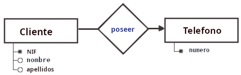
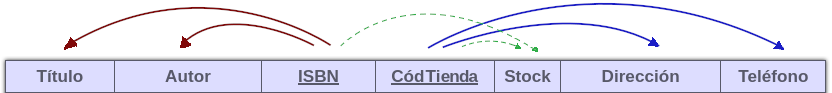
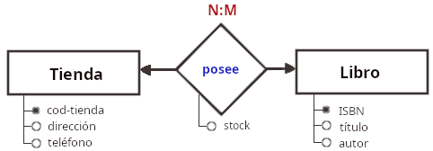
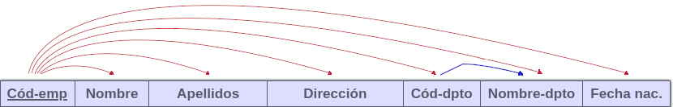
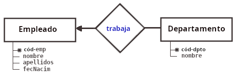

Normalización de tablas
Normalización
Durante el diseño de una base de datos relacional debemos realizar un proceso al que se conoce como normalización, que consiste en definir las reglas que determinan las dependencias entre datos de la BDD.
Una vez conocida las dependencias y aplicando lo que se conoce como "formas normales" conseguiremos que:
- la cantidad de espacio necesario para guardar los datos sea el menor posible, y
- la facilidad para actualizar las tablas sea la mayor posible.
Es decir, optimizar su funcionamiento.
Normalización:
técnica para eliminar redundancias y optimizar los accesos en una base de datos relacional.
Antes de que Codd desarrollara la teoría relacional (1970) era frecuente que los datos se almacenaran en uno o varios ficheros con multitud de información redundante. Digamos, cosas como...
Proveedores de chips
| TIN | teléfono | código-pais | País | Ciudad | Dirección | chip | precio |
|---|---|---|---|---|---|---|---|
| EE0000003 | 446351230, 446500001, 446707070 | GB | Gran Bretaña | Londres | Main St, 5 | UART | 40 |
| EE0000003 | 446351230, 446500001, 446707070 | GB | Gran Bretaña | Londres | Main St, 5 | Z-80 | 25 |
| 12387654 | 863334344 | CN | China | Hong Kong | Li Chi 4 | Z-80 | 18 |
| EE01233210 | 449960001 | GB | Gran Bretaña | Londres | Silver St, 7 | Z-80 | 20 |
| EE445265 | 447777744 | GB | Gran Bretaña | Londres | Gold St, 8 | Celeron | 60 |
| A65413695 | 342984321, 342944322 | ES | España | Madrid | C/ Limón 1 | Z-80 | 22 |
| EE9552200 | 338703210, 338885555 | FR | Francia | Limoges | Neige R, 25 | Z-80 | 20 |
| A65413695 | 342984321, 342944322 | ES | España | Madrid | C/ Limón 1 | Celeron | 61 |
| H2952012 | 346129999 | ES | España | Barcelona | C Cobre 22 | Celeron | 63 |
| EE0000003 | 446351230, 446500001, 446707070 | GB | Gran Bretaña | Londres | Main St, 5 | i5 | 125 |
| ··· | ··· | ··· | ··· | ··· | ··· | ··· |
El TIN (Tax Identification Number) equivale al NIF pero a nivel mundial, identifica a empresas o particulares que realizan comercio internacional. Es el código de proveedor.
La gran cantidad de información redundate en la tabla anterior puede generarnos anomalías de actualización:
- inserción: Si insertamos un nuevo proveedor, tenemos que dar de alta más de un registro (uno por chip).
- modificación: si un proveedor cambia de ciudad, debemos actualizar el valor en más de un registro.
- borrado: Si un proveedor quiebra, debemos borrar muchos registros.
Por lo que llegamos a la conclusión de que está mal diseñada: se debe subdivir esta tabla en varias tablas.
Formas normales
Para minimizar las información redundante, y evitar inconsistencias, se definieron unas reglas que deben cumplir las bases de datos. Se conocen como formas normales.
Hay 5 formas normales (FN) más una de añadidura (FN de Boyle-Codd)
- Si la BDD cumple la primera regla, se dice que la BDD está en 1ª forma normal (1FN),
- si cumple las dos primeras reglas, se dice que la BDD está en 2ª forma normal (2FN),
- si cumple las tres primeras reglas se dice que está en 3FN.
La 3ªFN se considera el nivel más alto necesario para la mayoría de las aplicaciones, pues para que no se cumplan las demás deben ser situaciones "rebuscadas".
La idea global es que, al final, todos los atributos de una tabla dependan de la clave y sólo de la clave.
Primera forma normal (1FN)
Una relación está en primera forma normal (1FN) si todos sus valores son atómicos, es decir, cada atributo tiene un valor único de su dominio.
En el siguiente ejemplo el atributo, "Teléfono" no tiene un valor atómico, sino repetitivo:
| NIF | Nombre | Apellidos | Teléfono |
|---|---|---|---|
| 01115985A | Alfonsina | Aguado López | 636595522 912554556 913233333 |
| 95682544B | Benito | Bastante Cansino | 67890123 9133300011 |
| 51254854C | Carlos | Cárdenas Camarasa | 62153665 |
Soluciones a esto podrían ser:
1. Aplicar la 1ª FN: Crear campos univaluados, para lo que deberemos duplicar los registros de clientes con varios teléfonos, creando un registro para cada teléfono con lo que la clave sería NIF + Teléfono
| NIF | Nombre | Apellidos | Teléfono |
|---|---|---|---|
| 01115985A | Alfonsina | Aguado López | 636595522 |
| 01115985A | Alfonsina | Aguado López | 912554556 |
| 01115985A | Alfonsina | Aguado López | 913233333 |
| 95682544B | Benito | Bastante Cansino | 67890123 |
| 95682544B | Benito | Bastante Cansino | 9133300011 |
| 51254854C | Carlos | Cárdenas Camarasa | 62153665 |
mmmh... demasiada redundancia. SI, pero esa redundancia se resolverá conforme avancemos en la normalización.
De hecho, la aplicación de la 2ª FN nos va a dar como resultado la aparición de dos tablas:
| NIF | Nombre | Apellidos |
|---|---|---|
| 01115985A | Alfonsina | Aguado López |
| 95682544B | Benito | Bastante Cansino |
| 51254854C | Carlos | Cárdenas Camarasa |
| NIF | Teléfono |
|---|---|
| 01115985A | 636595522 |
| 01115985A | 912554556 |
| 01115985A | 913233333 |
| 95682544B | 67890123 |
| 95682544B | 9133300011 |
| 51254854C | 62153665 |
Con diagrama Entidad-Relación:

- Otra solución podría ser crear varios campos con el mismo dominio:
| NIF | Nombre | Apellidos | Teléfono-1 | Teléfono-2 | Teléfono-3 |
|---|---|---|---|---|---|
| 01115985A | Alfonsina | Aguado López | 636595522 | 912554556 | 913233333 |
| 95682544B | Benito | Bastamte Cansino | 67890123 | 9147700011 | NULL |
| 51254854C | Carlos | Cárdenas Camarasa | 62153665 | NULL | NULL |
Esto no estaría mal si la inmensa mayoría de nuestros clientes tuviera tres teléfonos, pero
la aparición de demasiados campos a NULL puede guiarnos a otra solución.
Segunda forma normal (2FN)
Una tabla está en segunda forma normal (2FN) si cumple las siguientes reglas:
- Está en 1FN.
- Todos los atributos que no forman parte de la clave primaria dependen por completo de ella, no de un subconjunto de la clave.
Es decir: si tenemos atributos que dependen sólo de parte de la clave, entonces esa parte de la clave y esos atributos formarán otra tabla.
En el ejemplo de abajo hemos identificado como clave de la tabla los atributos: { "ISBN", "Cód-tienda" }.
Se observa que los atributos "título"/"autor" no dependen de toda la clave, sino del ISBN, y los atributos "Dirección"/"Teléfono" solo de "Cód-tienda".
| Título | Autor | ISBN | Cód-tienda | Stock | Dirección | Teléfono |
|---|---|---|---|---|---|---|
| La niebla | Julio Domínguez | 9788402073 | 3 | 3 | C/ Luchana, 34 | 623425200 |
| La niebla | Julio Domínguez | 9788402073 | 6 | 1 | C/ Desengaño, 5 | 699221133 |
| Nadie | Josefina Lis | 0031122952 | 11 | 1 | Pº Castellana, 132 | 600161616 |
| Don Mingote | Cacerolo | 1325652955 | 2 | 5 | C/ Dulcinea, 145 | 611123010 |
| Vendrán días | Isidro Martín | 2222556656 | 11 | 7 | Pº Castellana, 132 | 600161616 |
Por ese motivo se repiten valores, con la consiguiente redundancia de información.
Mirando las dependencias resolvemos en dos tablas y una relación:

El atributo stock se encuentra en la relación, pues depende de cada libro y librería, es decir, depende de ambas claves: 
La 2FN viene a decir que los registros no deben depender de nada que no sea una clave principal de una tabla (clave compuesta si es necesario).
Sólo puede darse incumplimiento de la 2FN cuando la clave primaria es compuesta, en cuyo caso deberíamos normalizar a 2FN. Entonces podemos concluir que: → toda tabla 1FN cuya clave primaria conste de un único atributo ya es 2FN.
Tercera forma normal (3FN)
Una relación está en tercera forma normal (3FN) si:
- Está en 2FN.
- Todos los atributos que no forman parte de la clave primaria son independientes entre sí, es decir, no dan información sobre otros atributos de la relación.
En el siguiente ejemplo de empleados de cierta empresa, todos los atributos dependen directamente de la clave primaria ("Código de empleado") excepto "Nombre de departamento", que depende de "Código de departamento":
| Cód-emp | Nombre | Apellidos | Dirección | Cód-dpto | Nombre-dpto | Fecha nac. |
|---|---|---|---|---|---|---|
| 12 | Paula | Sanz González | C/Mtnez. Izqdo., 40 | 3 | Financiero | 13/09/1983 |
| 268 | José Luis | García Viñals | Pº Melancólicos, 1 | 2 | Informática | 05/02/1963 |
| 250 | Javier | Peinado Martín | C/Guitarra, 7 | 5 | RRHH | 24/10/1978 |
| 181 | Ruth | Lázaro Cardenal | C/Torrelaguna, 64 | 3 | Financiero | 15/05/1981 |
La 3FN lo que hace es evitar la existencia de dependencias transitivas como la que se observa abajo, que también nos dan lugar a redundancias, en este caso en el nombre de departamento.

Otra forma de enunciar esta 3FN es:
Una tabla se encuentra en 3FN si es 2FN y no existe ninguna dependencia funcional transitiva entre atributos que no son clave.
Atendiendo a las dependencias tenemos dos claves, cada una dará lugar a una tabla:

Existen otras formas normales: la forma normal de Boyle-Codd (FNBC), y las 4ª y 5ª FN, pero rara vez se consideran en un diseño real.